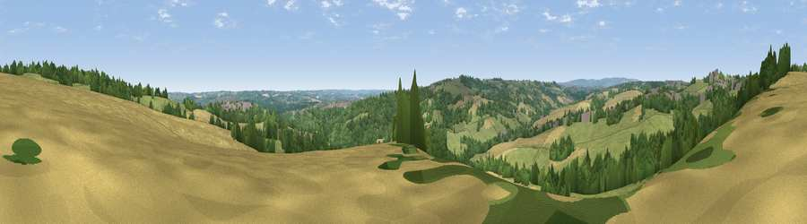

Viewpoint near Ridgeway
#23986 in England · top 34% of its area beats it · near Ridgeway · path 80 mWhere it is
The exact computed spot (SK 41025 81175). Click the marker for map links.
Public access: the nearest public right of way is about 80 m away — the final stretch may cross private land. Computed from Natural England's CRoW access layer and OpenStreetMap rights of way — not the legal definitive map. Always verify locally.
The view, rendered

A 360° render of this exact spot computed from the terrain model, tree cover and land cover — summer colours, afternoon light, calibrated against photographs of famous viewpoints. Real trees, hedges and buildings will differ in detail.
The panorama
Grey silhouette: terrain skyline in each direction (720 bearings, Earth curvature and refraction included). Dashed green: skyline with trees (+15 m) and buildings (+8 m) as obstacles. Blue strip: how far the ground is visible on each bearing.
Where the view opens
Wedge length = distance to the farthest visible ground on that bearing (vegetation-aware). Rings at 10, 25 and 50 km.
What fills the view
43% grassland · 28% woodland · 26% cropland · 3% built-up
Angular shares of the visible panorama (visual magnitude), not map area. Landscape diversity 0.51 (0–1 Shannon).
Key numbers
More beautiful places nearby
The staircase of upgrades: each row has a higher view potential than everything closer. Driving times are estimates from straight-line distance, calibrated against real road routing — check an actual route before setting out.
| Place | Direction | Drive | Score |
|---|---|---|---|
| Viewpoint near Ridgeway | NW · 1 km | ~4 min | 67.6 |
| Viewpoint near Holmesfield | W · 12 km | ~23 min | 69.4 |
| Viewpoint near Oughtibridge | NNW · 15 km | ~27 min | 70.0 |
| Viewpoint near Hathersage | W · 16 km | ~28 min | 70.9 |
| Viewpoint near Whitley | NNW · 17 km | ~30 min | 72.1 |
| Viewpoint near Wharncliffe Side | NNW · 18 km | ~31 min | 75.2 |
| Tissington Hill | SW · 38 km | ~58 min | 75.5 |
| Wild Bank | WNW · 45 km | ~66 min | 76.2 |
53.32591, -1.38552 · source: screening · position refined by local search. Computed location — check access rights before visiting.